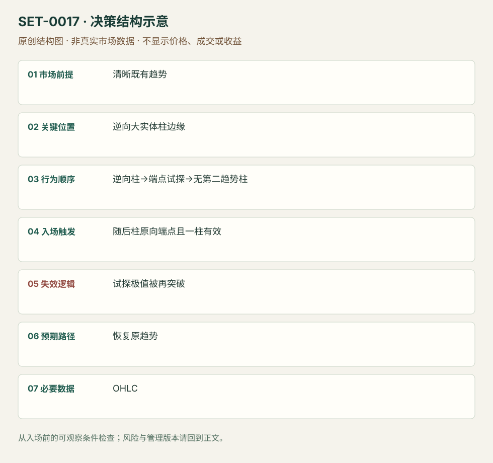

逆趋势实体柱试探失败后的顺势入场
Trend Bar Failure · SET-0017 · reviewed · v1.0.0
盈利证据：not_established。审查范围与来源版本见第13节；未知字段保留缺失原因。
1. 名称与快速概览
明确趋势里出现逆向大实体柱，随后试探该柱逆趋势端点却不能形成第二根逆向实体推进；下一柱顺势端点被越过时考虑趋势恢复。只挂单一柱，不触发即取消。
记录口径：PA core；必要数据 OHLC、EMA_optional。名称性质：编辑性描述名，英文保留来源术语以便检索。reviewed 只表示本条规则与证据记录审查通过，盈利状态为 not_established。
2. 本质与行为假说
价格试探逆向承诺并拒绝跟随可见；“被困逆势交易者”是解释，并无账户身份记录。大实体本身不能证明趋势终结。
3. 适用市场与环境
背景方向清楚，逆向柱是局部挑战。频繁交替大实体、EMA斜率不清且重叠密集时不采用。
来源实用市场：ES期货5分钟。
Session：美股/ES现金参考段 09:30–16:00 America/New_York；收盘前平仓。期货夜盘单独建背景，不将其并入开盘区间。
跨市场：本版不主张已经验证的跨市场迁移；更换市场必须重定数据来源、流动性与session。
4. 出现前的观察清单
必要：趋势背景、逆向趋势柱及低/高被试探、无第二逆向趋势柱。增强：原向支持区域。否决：逆向连续推进已成立。
5. 形成过程与状态转换
原趋势→逆向大实体→试探其端点但无跟随→设下一柱原向触发→一柱内成交或取消。
6. Entry trigger 与执行方式
Galen将趋势柱实体大于总范围50%操作化；多头等逆向低点被试探后的柱高外buy stop，空头镜像。触发必须在下一柱期限内。
7. Invalidation 与止损逻辑
本研究以失败试探极值为结构保护；逆向重新推进会否定本次承诺失败。紧信号柱风险与整个试探极值风险不同，来源没有统一跨市场固定tick。
8. Exit、target 与 trade management
趋势既有极值为第一参考；强恢复可跟踪后续摆动。成交后迟迟不推进或转拥挤时缩短期待；退出具体模块为研究补充。
9. 常见 variations
Pipe、inside-bar failure与本条重叠时保留别名；并非每个pipe都符合端点试探和一柱期限，不能仅按形状归入。
10. 失败方式与不交易条件
正常亏损：失败试探后再次逆向。未成立：第二逆向趋势柱已成。偏离：挂单数柱等到很晚触发。未成交不等于亏损。
11. 与相近 setups 的区别
12. 图表与案例解读
已查看ES12-13，5分钟，2013-11-15图。案例1与4明示Buy order not triggered，属于取消/未成交；案例2逆向柱试探均线后没有强跟随，顺向柱触发。案例3同时inside失败，不增加计数。图轴跨午夜且时区未知，不能据时钟改变原规则。
- [VIS-000017] Trend Bar Failure ES Example；定位：ES 5-minute Example。两处未触发例与一处有限跟随；不能把未触发归为止损。 验证：chart_viewed。

本地原创示意（VIS-000074，非真实市场数据）：

小屏阅读可打开原尺寸示意图并缩放。

此图用于对照识别顺序与风险定义；不计入真实案例覆盖率。
视觉材料元数据与查看范围
- VIS-000017 · real_source_chart / structure_and_trigger / chart_viewed
品种：ES 12-13；日期：2013-11-15；周期：5分钟；时区：未知/不适用
时区未在图中核对；来源图表不是成交审计 - VIS-000074 · synthetic_structure_diagram / illustration_only / generated_not_market_evidence
品种：未知/不适用；日期：未知/不适用；周期：未知/不适用；时区：未知/不适用
无真实品种、日期或价格：这是结构示意
13. 证据、分歧与未知项
两份Galen材料属于同族，独立佐证有限。明确实体50%与取消期限归作者；结构止损操作化归研究，未核验作者高概率措辞。
- [EVD-000030] Galen Woods，《A Simple and Effective Price Action Trading Setup》，SRC-0047；定位：Rules for Long/Short、ES Example。支持：逆向趋势柱端点先被突破但没有第二根逆向趋势柱跟随，下一柱端点顺向触发且一柱未成交取消
- [EVD-000031] Galen Woods，《4 Price Action Trading Strategies That Profit From Trapped Traders》，SRC-0008；定位：Trend Bar Failure。支持：以逆势承诺失败捕捉恢复原趋势，陷阱说明不能识别真实参与者
审查边界：来源份数与独立核心核验分开；当前类别为 limited_single_family。正文中的概念、官方事实、衍生解说或同族资料只按其支持范围使用。
14. 可用于复盘的检查表
- ☐ 下单前的前提可核对：清晰既有趋势
- ☐ 事前标记位置：逆向大实体柱边缘
- ☐ 行为按顺序出现：逆向柱→端点试探→无第二趋势柱
- ☐ 实际触发符合选定版本：随后柱原向端点且一柱有效
- ☐ 事先写明本次否定条件：试探极值被再突破
- ☐ 目标/路径只用当时已知信息：恢复原趋势
- ☐ 数据满足 OHLC；记录时间、点差、滑点、队列和未成交
- ☐ 记录截止平仓及规则偏离；正常亏损不事后改成“未成立”
15. 后续验证问题
记录未成交和取消的全体候选；检验一柱期限相对无限挂单的影响，固定实体比例。
双向相关导航
- SET-0005 内包线突破失败陷阱 Hikkake要求inside起点及其后假突破，本条要求逆向大实体承诺且一柱期限。
- SET-0006 趋势中的两段回撤第二次入场 H2要求两段回撤；本条不数两段，只检验逆向柱是否获得跟随。